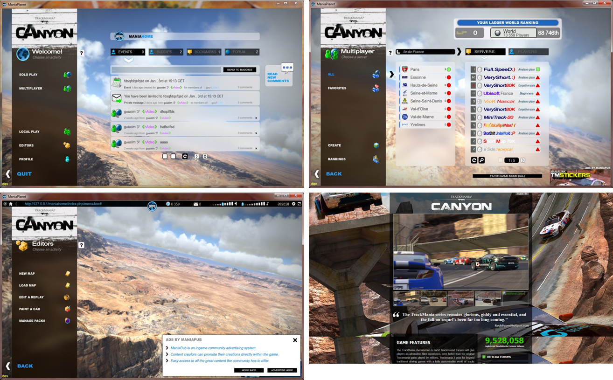

Ubisoft Nadeo - Live
Epitech Janvier 2018
Baptiste Lafontaine
Ingénieur online
http://magnetik.org - baptiste@nadeo.com
- Bac STI ▶ BTS Electrotechnique ▶ Prépa ATS
- Télécom SudParis - Architecture de services en réseau
- Open source üéî
- Rigeur üéîüéî
Ubisoft Nadeo
Basé à Paris Montparnasse et Bordeaux !
Recherche & innovation : création par les joueurs & compétition
0,36% de l'effectif d'Ubisoft
NADEO
CORE : moteur 3D, physique, réseau
SOFT : éditeurs (maps, titres, mesh)
DATA : environnements
LIVE : slide suivant =)
GAME : jeux
Nadeo LIVE
Concevoir, développer et maintenir des systèmes live pour les jeux Nadeo
- Services pour les joueurs, les créateurs & les spectateurs
- Maintenance des applications et de la plateforme
- Relation directe avec les joueurs
- Pre & Post Launch
Nos jeux
2003 : Trackmania

2006 : Trackmania Nations ESWC

2011 : Trackmania² Canyon
2011 : Maniaplanet 1.0
Maniaplanet runs games like Windows runs applications
2011 : Maniaplanet 1.0
2012 : Shootmania Storm

2013 : Trackmania² Stadium

2013 : Trackmania² Valley

2014 : Maniaplanet 3.0
2016 : Trackmania Turbo
2016 : Trackmania² Lagoon
2017 : Maniaplanet 4
Channels
L'évolution de notre stack
2011 : Maniaplanet 1.0
Stack live
- Langage PHP 5.3 : manialib (framework maison)
- Applications ~10 micro services + applis transverses
- Serveurs Virtualisation (VMWare)
- Provisionnement -
- Monitoring Munin
- Développement EasyPHP
- Versions SVN
2014 : Maniaplanet 3.0
Stack live
- Programmation PHP 5.5 : manialib (framework) + composer (gestion de dépendances)
- Applications ~15 micro services + applis transverse
- Serveurs AWS
- Provisionnement Ansible
- Monitoring Grafana
- Développement Virtualbox
- Versions Git
2016 : Trackmania Turbo
- Programmation PHP 7 : Symfony (framework) + composer
- Applications 2 applis : backend & frontend
- Serveurs AWS (Terraform)
- Provisionnement Ansible
- Monitoring Grafana + Kibana (logs)
- Développement Galactica (basé sur Vagrant & virtualbox)
- Versions Git
Outils
terraform
Write, Plan, and Create Infrastructure as Code
resource "aws_instance" "app" {
count = 2
instance_type = "m4.xlarge"
availability_zone = "eu-west-1a"
security_groups = [
"nadeo",
"${aws_security_group.maniaplanet4_access.name}"
]
tags {
Name = "maniaplanet4-app-${count.index}"
}
}
resource "aws_security_group" "maniaplanet4_access" {
name = "maniaplanet4_access"
description = "Access to maniaplanet4"
ingress {
from_port = 80
to_port = 80
protocol = "6"
cidr_blocks = ["0.0.0.0/0"]
}
}
ansible
App deployment, configuration management and orchestration
- hosts: role_maniaplanet4-app
roles:
- basic
- collectd
- apache
- php
- symfony
tasks:
- name: Install exiftool (used for some validation)
apt: name=exiftool state=present
- name: Create system user
user: name=maniaplanet4 groups=www-data append=yes